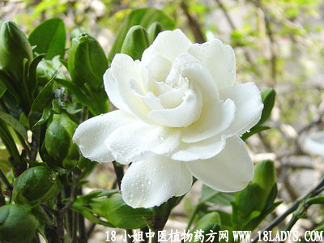

古籍名：栀子《神农本草经》。
别名：水黄枝、山栀根。
植物名：《枝子》
生长环境：本品为灌木，生于土山疏林中，或丘陵的灌木丛中，适应性颇强，野生栽培都有。
分布：我国东南部、中部和西南部。
入药部分：根。采名“枝子”。
采集期：全年采根，秋采果。
自采地点：山岗湿地。
性味：，味微甘苦。
功能：清暑热，解心色热，去湿、清肝。
主治、用量和用法：1、癍痧发热，配伍用；2、苏劳撞红：用干根2至4两，清水煎服；3、跌打瘀肿，配伍用。
验方1（治癍痧发热方）：干水横枝根1两、干海金沙藤5钱、干篱栏5钱、干狗肝菜5钱、清水四碗，煎成一碗，热服。
（方解）水横枝、狗肝菜、清热解毒；海金沙藤利水；篱栏利咽清肝。相辅为用，为祛邪清热之剂。
（方歌）癍痧发热水横枝，沙藤篱栏狗肝施，利水解毒还清热，苦凉淡渗当师。
验方2（跌打瘀肿方）：水横枝根1两，九层塔5钱、透骨消5钱、血见愁5钱、入地金牛根5钱。清水四碗，煎成一碗服温服。
（方解）水横枝根凉血破血；九层塔、透骨消宣通血脉；血见愁散瘀消肿止血；金牛行气。组合成方，对跌打瘀肿有效。
（方歌）跌打瘀肿未全消，水横枝根透骨消，入地金牛九层塔，血见愁来力更妙。
附录：水横枝根与山枝子作用相同，但一般中医少用，生草药医生用山枝根有悠久经验，值得推广。